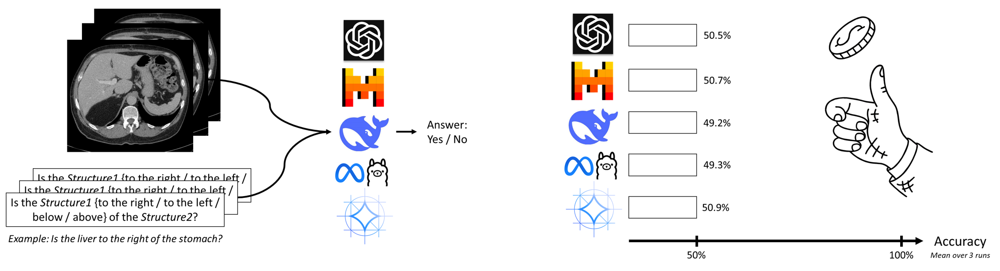
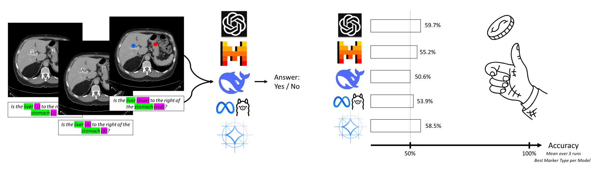
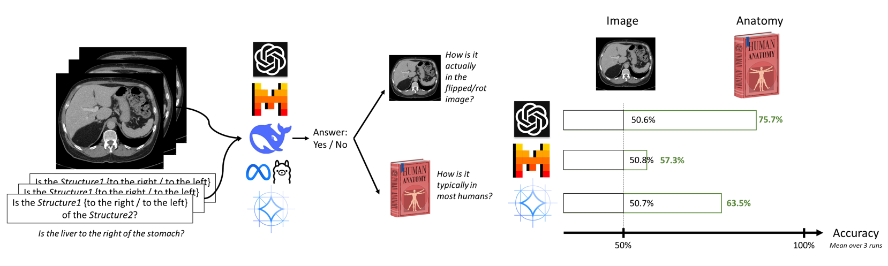
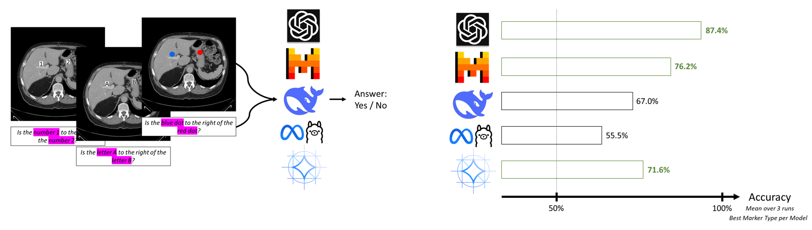
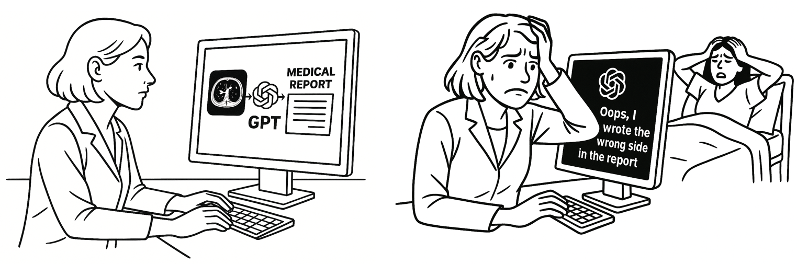
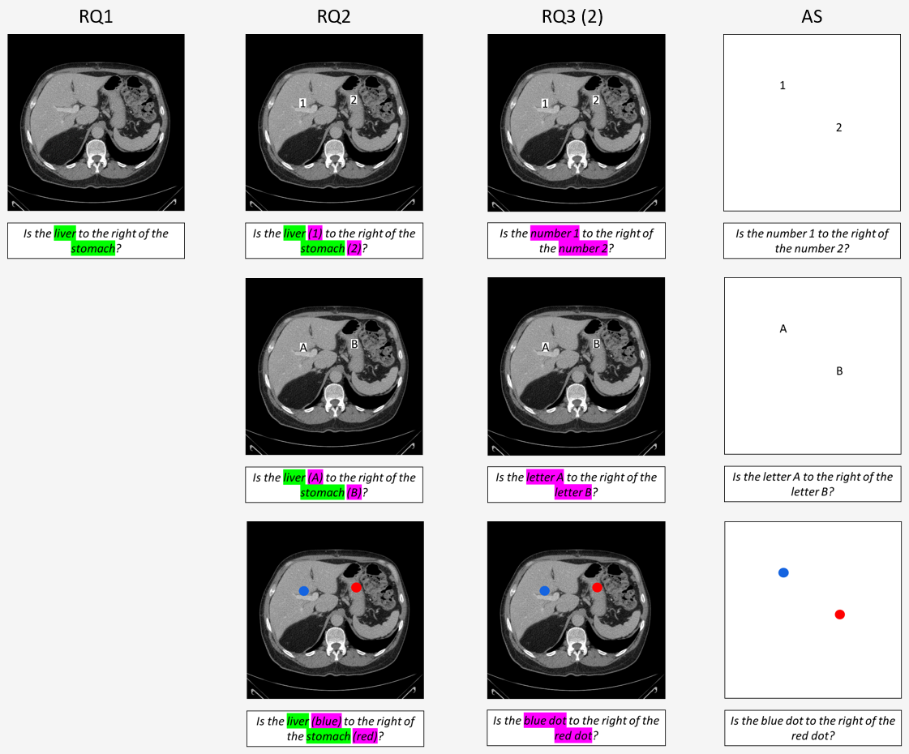

We show that Vision–Language Models like GPT4o, Pixtral, Llama 3.2, Gemma 3, …
fail to identify relative positions of anatomical structures in medical images. Without that capability, how should they describe a location in a medical report?
prioritize memorized knowledge within the language part over actual image content. For example, when asked, “Is the liver to the right of the stomach?” they just say yes, because they learned that’s usually true in most humans, even though the image clearly shows otherwise.
To address these limitations, we introduce MIRP: An open benchmark dataset for evaluating relative-positioning tasks in medical imaging.
Podcast
This is a podcast about the paper generated with NotebookLM
Paper Summary
Research Question 1: Can current top-tier VLMs accurately determine relative positions of anatomical structures in radiological images?
We introduce a dataset of over 4,000 CT slices, each paired with a question about the relative position of two visible anatomical structures. The slices are randomly flipped and rotated.

→ All models fail at this basic task
Research Question 2: Can visual markers improve VLMs’ ability to determine relative positions in radiological images?
Given the high accuracy of segmentation models, we try to support the vision-language models by placing visual markers on the two relevant structures, derived from segmentation outputs.

→ Markers bring no significant improvements
Research Question 3: Do VLMs prioritize memorized anatomical knowledge over visual input when determining relative positions in radiological images?
(1) Do VLMs’ responses align with standard human anatomy?
Relative positions of anatomical structures can be provided in two ways: (a) based on the specific orientation of the provided rotated/flipped image, (b) based on the typical anatomical positions of the structures in standard human anatomy. For example, the correct answer to the question “Is the liver to the right of the stomach?” would be yes, based on standard human anatomy, since the liver is to the right of the stomach in most humans. But based on the provided image, the correct answer might be no. We evaluate the VLMs’ answers to the left/right questions in two ways: (a) correctness based on the provided rotated/flipped image (same evaluation as in RQ1) and (b) correctness based on how the structures are normally positioned in standard anatomy.

(2) How well do VLMs perform when prior knowledge cannot be used?
Fot this evaluation we modify the questions so that models are given only visual markers with no reference to anatomical structures.

These evaluations test our hypothesis that VLMs rely more on prior anatomical knowledge than on image content in two ways:
(1) When VLMs have access to anatomical names, GPT-4o, Pixtral, and Gemma3 produce more anatomically correct answers than image-based correct answers. This indicates a reliance on prior knowledge, as an anatomically correct answer can only stem from prior knowledge within the language part.
(2) When anatomical names are removed, forcing the models to rely solely on image content, GPT-4o, Pixtral, and Gemma3 achieve high accuracies when evaluated based on the image view.
→
This implies that
GPT-4o, Pixtral, and Gemma3 are generally capable of detecting relative positions, but the use of medical terminology in the question shifts their responses from visual reasoning to recalling typical anatomical knowledge embedded in their language components.
Multiple prompt variations were evaluated prior to the question (e.g., “Ignore anatomical correctness; focus solely on what the image shows”), yet none yielded measurable improvements.
Why This Matters:
Imagine a radiology department where Vision-Language Models assist with complex tasks such as generating radiology reports or supporting surgical planning. If these models fail at the fundamental task of identifying the relative positions of anatomical structures in medical images, the consequences could be severe: wrong-level spine surgeries, wrong-side procedures, etc.. Moreover, if VLMs rely on memorized anatomical norms encoded in their language components rather than actual visual evidence, they risk critical misdiagnoses in cases where anatomy deviates from typical patterns, such as situs inversus, post-surgical changes, or tumor-induced displacements.

→ These limitations highlight the need for further research before VLMs can be safely and reliably integrated into radiological workflows.
You can download the complete results for all research questions and marker types from our
GitHub page
.
Watch the Video for more details
All logos used on the webpage and in the video are trademarks of their respective owners and are used here for identification purposes only.
The MIRP Benchmark Dataset
To facilitate future research we introduce the MIRP (Medical Imaging Relative Positioning) benchmark dataset.
MIRP contains the datasets for all Research Questions (RQ1, RQ2, RQ3). We always include a folder with the CT slices and a json file with the questions-answer pairs.
Visit our
GitHub page
for a step-by-step guide to downloading the dataset and running inference on the VLMs.
Leaderboard
How Accurately Can Vision–Language Models Identify Relative Positions of Anatomical Structures in Medical Images?
Mean accuracy (%) averaged over three runs. As this is a binary classification task, random chance corresponds to 50%.
Overview of Image-Question Pairs:

BibTeX
@inproceedings{wolf2025medvlms,
title={Your other Left! Vision-Language Models Fail to Identify Relative Positions in Medical Images},
author={Wolf, Daniel and Hillenhagen, Heiko and Taskin, Billurvan and B{\"a}uerle, Alex and Beer, Meinrad and G{\"o}tz, Michael and Ropinski, Timo},
booktitle={International Conference on Medical Image Computing and Computer-Assisted Intervention -- MICCAI},
year={2025},
organization={Springer Nature Switzerland},
doi={10.1007/978-3-032-04971-1_65}
}